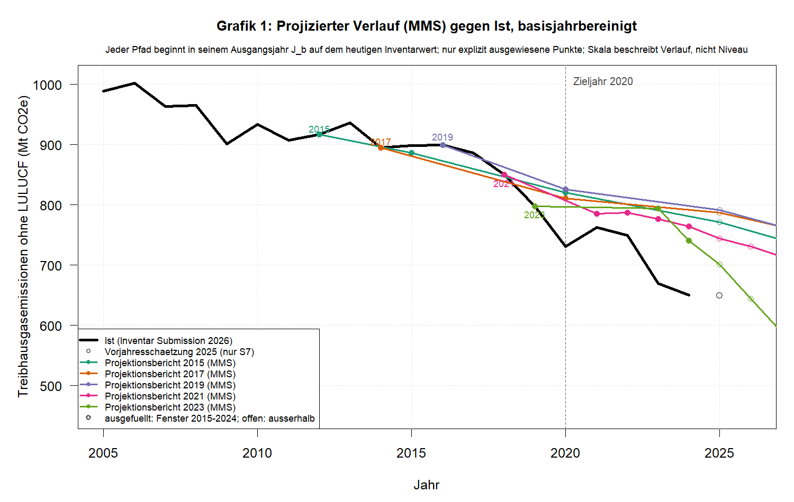

KLIMA KOMPASS · PROGNOSE-CHECK #1
1/6
Wie gut trafen die Projektionsberichte der Bundesregierung die Emissionen von 2020?
In allen drei auswertbaren Berichten lag die Projektion darüber, um 10,9 bis 13,0 Prozent.
Eine Projektion ist eine bedingte Rechnung, keine Vorhersage.
Klima Kompass · Prognose-Check #1Quelle: Projektionsberichte; Umweltbundesamt
ZIELJAHR 2020
2/6
Projektion 810 bis 826 Mt, tatsächlich 731 Mt

Bericht 2015: 821 Mt (12,3 %). Bericht 2017: 810 Mt (10,9 %). Bericht 2019: 826 Mt (13,0 %).
Projektionen auf den heutigen Wert des Ausgangsjahres umgerechnet. Mt = Millionen Tonnen CO₂-Äquivalent.
Klima Kompass · Prognose-Check #1Quelle: Projektionsberichte; Umweltbundesamt; Auswertung Klima Kompass
ALLE ZEHN VERGLEICHE AUS FÜNF BERICHTEN
3/6
Meist zu hoch
10,9 %
Mittlere Abweichungnach oben, alle zehn Vergleiche
9 von 10
Projektion zu hochüber dem tatsächlichen Wert
1 von 10
Projektion darunterBericht 2015 für 2015: minus 1,4 %
Einen Trend über die Berichte oder mit dem Abstand zum Zieljahr können wir aus zehn Vergleichen nicht ablesen. In allen berechneten Varianten ist die mittlere Abweichung positiv.
Klima Kompass · Prognose-Check #1Quelle: Projektionsberichte; Umweltbundesamt; Auswertung Klima Kompass
ZWEI NEBENBEFUNDE
4/6
MIT WEITEREN MASSNAHMEN (MWMS)
In 4 von 5 Vergleichen näher am tatsächlichen Wert. Diese Zahl hängt am Bericht von 2015, ohne ihn sind es 3 von 3. Eine Rangfolge der Szenarien ist das nicht.
SENSITIVITÄTSRECHNUNGEN
Der tatsächliche Wert für 2020 lag in allen drei Berichten unter deren gesamter Spannweite. Eine Aussage über die Qualität der Modelle ist das nicht, denn diese Rechnungen variieren nur einzelne Annahmen.
Klima Kompass · Prognose-Check #1Quelle: Projektionsberichte; Auswertung Klima Kompass
WAS DIE ANALYSE NICHT SAGT
5/6
- Eine Projektion ist eine bedingte Rechnung, keine Vorhersage.
- Wir nennen keine Ursachen und bewerten weder Berichte noch Politik. Ob die Pandemie die Abweichung für 2020 erklärt, lässt sich aus den Zahlen nicht ablesen.
- Zehn Vergleiche aus fünf Berichten, nicht unabhängig voneinander. Sie sagen nichts über künftige Projektionen.
- Zwei Rechnungen aus dem Plan haben wir nicht durchgeführt: die mit der ersten Inventarversion und die mit den Projektionsdaten des Umweltbundesamts für 2024 und 2025.
Klima Kompass · Prognose-Check #1Quelle: Analysebericht Klima Kompass
FAZIT
6/6
ZEHN VERGLEICHE, FÜNF BERICHTE
Die Projektion lag in 9 von 10 Vergleichen über dem tatsächlichen Wert, im Mittel um 10,9 Prozent.
OFFENLEGUNG
Rechnung und Prüfung mit KI-Werkzeugen, die Redaktion verantwortet sie.
Ganzer Artikel: Link in Bio
Klima Kompass · Prognose-Check #1Quelle: Projektionsberichte; Umweltbundesamt; Auswertung Klima Kompass